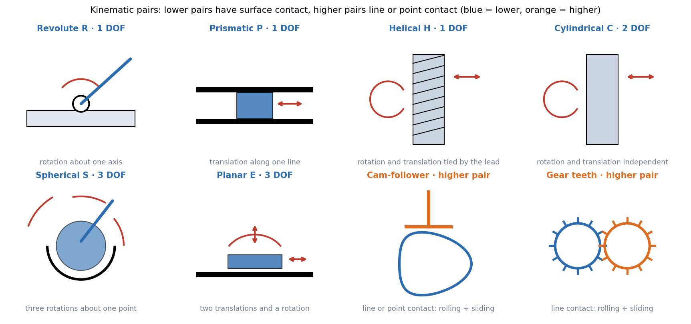

Kinematic Pairs, Links and Chains
A mechanism is rigid links joined by pairs. Each pair restricts the relative motion of the two links it joins and leaves a few degrees of freedom. What a mechanism does is decided by which pairs connect which links, so learn the pairs first.
Part of KDoMs - MOC. Next: Mobility - Kutzbach Equation and Exceptions.
1. Machine, mechanism, rigid body
| Term | Meaning |
|---|---|
| Machine | Transmits and transforms energy to do useful work (engine, pump). |
| Mechanism | Rigid links arranged to transmit motion in a prescribed way. It need not carry real loads. |
| Kinematics | Motion without regard to force. |
| Dynamics | Motion with the forces and inertias that cause it. |
| Rigid link | A body whose points keep fixed mutual distances: a planar link has 3 degrees of freedom, a spatial one 6. |
2. Classifying pairs
A pair (joint) restricts the relative motion of two links. Three independent ways to sort them:
- By the nature of contact. Lower pairs have surface contact; higher pairs have line or point contact.
- By how the contact is kept. Form-closed (geometry holds it: a pin in a hole, a slider in a groove) or force-closed (a spring, gravity or a load must press the surfaces together: a cam and follower, a link resting on a plane).
- By the degrees of freedom it leaves between the two links.

| Lower pair | Symbol | Relative DOF |
|---|---|---|
| Revolute (hinge, pin) | R | 1 (rotation) |
| Prismatic (slider) | P | 1 (translation) |
| Helical (screw) | H | 1 (rotation and translation tied by the lead) |
| Cylindrical | C | 2 (rotation, translation) |
| Spherical (ball and socket) | S | 3 (three rotations) |
| Planar | E | 3 (two translations, one rotation) |
In a planar mechanism only R and P appear as full joints; they remove 2 of the 3 planar DOF. A higher pair (cam–follower, gear teeth) leaves 2 relative DOF in the plane, rolling and sliding, so it removes only 1.
A planar pin carries 2 reaction force components (and no moment) and removes 2 DOF. A higher pair carries 1 force (along the common normal) and removes 1 DOF. This is why counting constraints for mobility and drawing a free-body diagram are the same bookkeeping: Free-Body Diagrams and Equilibrium of Rigid Bodies.
3. Joints of more than two links
Several links can share one pin. A joint of links counts as joints for mobility (two links make a single pin; a third link on the same pin adds one more). Drawing conventions: a small circle is a revolute pair; a continuous link drawn through a pin means that link is one body passing the pin; the fixed link is numbered 1 and hatched; a polygon with several pins is one rigid ternary or quaternary link.
4. Links, chains, mechanisms
| Term | Meaning |
|---|---|
| Link | A rigid body with at least two pairs. |
| Kinematic chain | Links joined by pairs. |
| Closed chain | Every link has at least two pairs and the loop closes. |
| Open chain | An end link has only one pair (a robot arm). |
| Mechanism | A chain with one link fixed (a frame). |
| Linkage | A mechanism whose pairs are all lower pairs. |
| Constrained mechanism | One input fixes every link's position (mobility 1). |
Mechanism types by motion: planar (all points move in parallel planes), spherical (all points move on concentric spheres, e.g. a Hooke's joint), spatial (neither).
graph TD
P["Kinematic pair"] --> C["Contact"]
P --> K["Closure"]
P --> D["DOF left"]
C --> L["Lower: R, P, H, C, S, E"]
C --> H2["Higher: cam-follower, gears"]
K --> F["Form-closed"]
K --> G["Force-closed"]
D --> D1["1 DOF: R, P, H"]
D --> D2["2 DOF: C, planar higher pair"]
D --> D3["3 DOF: S, E"]
Predict first: a roller follower pressed on a cam by a spring. Form- or force-closed, lower or higher?
Higher (line contact) and force-closed: take the spring away and the roller leaves the cam. A groove cam holding the roller on both sides would make it form-closed.
Why does a ball joint give 3 DOF but a hinge only 1?
The ball in its socket can still turn about any axis through its centre (3 rotations). The hinge's pin removes the other two rotations and all three translations.
5. Connections
- Plane Kinematics of Rigid Bodies — the 3 planar DOF of a free link that pairs then remove.
- Cam Motion Laws and the Flat-Face Follower — the cam–follower higher pair in detail.
- Gear Formula Bank — gear teeth as a higher pair whose motion obeys the fundamental law of gearing.